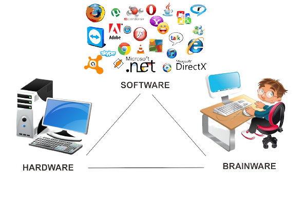

Komputer

komputer adalah Perangkat elektronik yang bisa kita gunakan untuk mengolah data sesuai prosedur yang dari awal sudah dirumuskan dalam sistemnya, sehingga akan menghasilkan informasi yang bermanfaat bagi para penggunanya.
Penggunaan nama Komputer ini berasal dari bahasa latin yaitu “computāre yang memiliki ari “menghitung”. Jadi Komputer bisa juga didefinisikan sebagai perangkat yang digunakan untuk melakukan perhitungan data seperti : Input data, mengolah data (proses) dan menghasilkan informasi sebagai hasil akhirnya.
Secara umum, komputer itu memiliki 3 elemen utama agar bisa dikatakan mampu mengolah dan menghasilkan data / informasi, diataranya adalah :

- Perangkat Keras (Hardware) : Ini adalah perangkat / alat-alat pendukung untuk bisa menjalankan software didalam sistem komputer, jadi semua yang berbentuk fisik masuk kedalam kelompok Hardware, diantaranya adalah Central processing unit (CPU), monitor, mouse, keyboard, computer data storage (Harddisk) , graphics card (VGA) , RAM, sound card, speakers dan motherboard.
- Perangkat Lunak (Software) : Serangkaian instruksi yang dapat disimpan ataupun dijalankan oleh perangkat keras. Sistem operasi (OS) termasuk dalam ketegori perangkat lunak.
- Pengguna Komputer (Brainware) : Pengguna / operator yang menggunakan komputer.
Jenis – Jenis Komputer
Komputer memiliki jenis yang berbeda-beda, itu bisa kita lihat dari perbedaan bentuk dan ukurannya. Berikut ini jenis-jenis komputernya :
- Personal Komputer
- Dekstop
- Laptop
- Netbook
- PDA
- Workstation
- Server
- Mainframe
- Supercomputer
- Wearable Computer
Fungsi Komputer
Secara umum komputer itu memiliki fungsi yang sangat beragam, tergantung pada orang yang menggunakannya. Jika kita lihat dari pembahasan diatas tentang pengertian komputer secara umum ataupun menurut para ahli,maka, bisa dikatakan bahwa komputer memiliki beberapa fungsi utama seperti dibawah ini :
- Data Input
Komputer bisa menerima informasi atau data dari perangkat lain. Data atau informasi yang diterima itu melalui aktivitas di keyboard, mouse, dari komputer lain atau peralatan lainnya.
- Data Processing
Salah satu fungsi utama komputer adalah digunakan untuk pengolahan data yang bisa menghasilkan output, yaitu berupa informasi. Biasanya, data yang diolah di dalam sistem komputer ini dalam bentuk teks, gambar, audio, video, grafik, dan lainnya.
- Data Output
Fungsi komputer berikutnya adalah untuk menghasilkan output/ informasi setelah melalui proses pengolahan data. Informasi tersebut dapat disajikan melalui monitor, alat printer, dan speaker.
- Data Storage
Komputer juga dapat berfungsi sebagai tempat untuk menyimpan data sehingga dapat ditemukan dengan mudah dan digunakan kembali. Data tersebut dapat disimpan di dalam memori internal komputer maupun memori eksternal.
- Data Movement
Fungsi lainnya adalah untuk memindahkan data dari satu komputer ke komputer lainnya atau berbagai alat output lainnya.